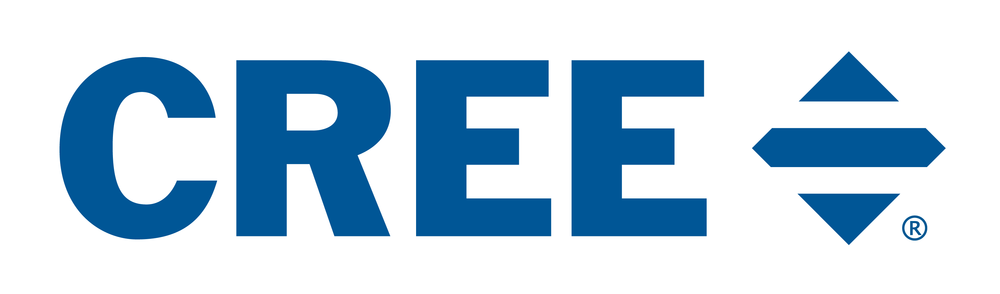
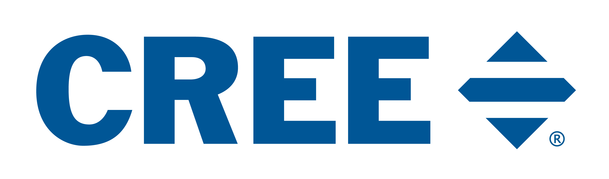

The accordion menu is a type of navigation menu that allows you to find the information you are looking for very quickly. The accordion menu has a maximum of three levels, which can be seen in the figure below.
The First level category, Healthcare, has the second level categories: General Information, Occupants, Specialty Information, and Summary beneath it. It is clear which of these second level categories have third level categories underneath them due to the icons next to them. Second level accordion menu categories with icons next to them have third level categories below them. Second level accordion menu categories without icons next to them do not have third level categories below them. In the figure above we have Healthcare > Speicalty Information > Lighting in the NICU selected.
Use the accodion menu to navigate the content of the background page quickly.
The content portion of the background page is where the user can gather the information necessary to understand the work the LRC, and the Light and Health Institute in particular, is working on. The content can be navigated via the accordion menu on the left side. To learn more about how to use the accordion menu, click the "Accordion Menu" tab to the left of the help menu.

There exists a Downloads section under Additional Information in the accordion menu where you can find all the downloads mentioned throughout the background text. These downloadable PDF's provide a summary of their respective content.
There exists a Glossary section under Additional Information in the accordion menu where you can find vocabulary words used throughout the background text and their definitions.
There exists a References section under Additional Information in the accordion menu where you can find all of the cited sources the background text references. These sources are also cited in-line in the background text.
If you hover over one of these citations, its reference will pop up in a bubble above the citation. If you click on the reference, you will be brought to that reference in the References section.
If at any point when using the Healthy Living website you come across something that doesn't seem to be functioning as intended, we would greatly appreciate if you submit report it to us via the Suggestions/Report a Bug section under Additional Information. There you can fill out a google form and describe what went wrong.


Light is the portion of the electromagnetic spectrum between about 380 and 780 nanometers (nm) that evokes a visual response in humans, and is the only quantity of the physical world that is defined entirely in terms of the human sensory mechanism. But light isn’t just for vision. The pattern of light and dark incident on the retinae also provides timing cues that inform and synchronize the circadian systems of Earth’s innumerable organisms, from bacteria, plants, and fungi through insects and amphibians to mammals and humans. In humans, light also evokes an acute alerting response any time of day or night. In this context, it is important to understand that “acute” connotes a short-term (< 24 hours) effect that is largely independent of the circadian system rather than an effect that is simply sudden, sharp, or severe.
The 24-hour pattern of light and dark that accompanies Earth’s axial rotation regulates the physiology and behavior of almost every living thing on the planet. For humans, light reaching the back of our eyes is the primary exogenous (external) cue that synchronizes or entrains the body’s endogenous (internal) master biological clock and thus our circadian rhythms to the solar day, essentially telling our bodies to do the right thing at the right time. Other secondary exogenous cues include social activity , meal times , and physical activity , among others. Sleeping and waking, feeding and fasting, the regulation of core body temperature, blood pressure, and the secretion of hormones are just a few examples of circadian rhythms. The term “circadian,” coined by biologist Franz Halberg in 1959, is a blended word derived from the Latin circa (“about”) and dies (“day”).
Because the human circadian system free-runs at an average period of about 24.2 hours—slightly longer than the solar day—a daily cue of light and dark is required to advance the circadian system by about 10–15 minutes, thereby continually resetting the biological clock to maintain circadian entrainment . But what light gives, light can also take away.
Exposure to light at the wrong time, or not receiving enough light at the right time, has become increasingly common since the advent of electrical lighting over a century ago. Exposure to light at night (LAN), and even a complete reversal of the day–night pattern in the case of night-shift workers, are now facts of life in our 24-hour society. But exposure to light at night and insufficient exposure to light early in the day has been linked with poor sleep and a host of health and behavioral problems. Long-term disruption of the daily cycle of light and dark can lead to chronic disruption of the circadian system, which has been associated with metabolic dysregulation (leading to weight gain, obesity, and type 2 diabetes) , certain forms of cancer , depression , and other maladies .
Early circadian research in animal and human models found that varying light levels at the eyes differentially affect the nighttime suppression of the hormone melatonin (the release of which prepares the body for sleep) and the timing of circadian phase (i.e., either advancing or delaying the timing of the circadian system’s 24-h cycle). The greater the amount of light, in other words, the greater the melatonin suppression and the greater the advance/delay (or shift) in circadian phase.
Because it has a peak spectral sensitivity that occurs around 460 nm , the human circadian system is maximally sensitive to short-wavelength (“bluish”) light (e.g., 465–475 nm), which in turn is maximally effective for stimulating the circadian system. In a manner similar to differences in light levels, short-wavelength light suppresses melatonin to a greater degree than longer wavelength (“reddish”) light (peak wavelength around 550 nm) and if experienced in the evening will delay circadian phase. Long-wavelength light, on the other hand, provides minimal circadian stimulus (CS) and thus only nominally suppresses melatonin and does not affect circadian phase. Because light of all wavelengths evokes an alerting response at any time of day or night, long-wavelength light is especially useful for promoting alertness during the afternoon and evening without disrupting the circadian system .
Humans are far more sensitive to light stimulus at night than in the middle of the day . Experiencing high levels of light later in the day and in the evening will delay circadian phase, causing us to fall asleep later than our usual bedtime, leading us to sleep-in or feel tired on waking the next day. Conversely, experiencing high levels of short-wavelength light early in the morning will reset the master biological clock, advancing our circadian phase and helping to entrain our circadian system to the solar day. Again, because the circadian system free-runs at a period that is longer than the solar day, we need light early in the day to maintain regular bedtimes. Longer exposure durations are also more effective at suppressing melatonin .
While it is well-accepted that exposure to higher light levels results in greater melatonin suppression at night, research also shows that a one-day light exposure of 200 lux suppresses melatonin to a greater degree when it is preceded by 3 days of dim light (< 1 lux) compared to 3 days of the same 2000-lux source . While the visual system’s response to light is virtually instantaneous, the circadian system’s response to light is cumulative .
When appropriately specified according to these four characteristics, light exposures can be tailored to remedy symptoms of seasonal affective disorder , increase sleep efficiency in older adults (including those with Alzheimer’s disease) , promote circadian rhythmicity in premature infants , increase alertness at all times of day and night , and improve alertness and selected measures of performance .
Here are two examples of disruptive and entraining lighting schemes. Typical commercial and residential lighting systems are considered to be inadequate for meeting the needs of the circadian system.
The human body’s nervous and endocrine systems transmit information throughout the body to regulate all bodily functions. The nervous system is essentially a hard-wired network made up of over 100,000 million nerve cells that transmit electrical signals from the body’s peripheral nervous system and the outside world through the spinal cord to the brain (the central nervous system), which in turn dispatches electrical signals to direct the actions of the body’s muscles, organs, and tissues. The endocrine system, on the other hand, sends chemical signals through the bloodstream in the form of hormones excreted by the body’s endocrine glands to regulate processes such as the sleep/wake cycle.
Secretion of the hormones melatonin and cortisol both follow circadian rhythms that are regulated by inputs from the suprachiasmatic nuclei (SCN) of the brain’s anterior hypothalamus, also known as the master biological clock, based on cues provided by the patterns of light and dark received at the retinae (see Non-visual Systems). Melatonin, known as the “darkness hormone” because it is released at night and under conditions of darkness, is produced by the pineal gland and prepares the body for sleep . Melatonin concentration in the bloodstream begins to diminish in the latter hours of sleep and remains barely detectable throughout the day.
Cortisol, produced by the adrenal glands, promotes the synthesis and storage of glucose and influences metabolic, immune, muscle, and functions as well as various brain activities as cognitive function and the regulation of emotions . In humans, it remains in low concentration in the bloodstream throughout the day but gradually elevates throughout the night, culminating 30–45 minutes after waking in a sharp increase known as the cortisol awakening response (CAR) . Research indicates exposure to polychromatic white light at morning awakening enhances the CAR in adults who are not sleep restricted, while awakening in darkness or dim light reduces the CAR’s dynamic . Our understanding of cortisol and its response to light are not as well understood as that of melatonin . It has been speculated that the CAR promotes alertness and arousal in anticipation of the forthcoming day’s demands .

The regulation of sleep and waking has been broadly conceptualized as a two-process model involving interaction between a homeostatic process, which maintains stability by counteracting opposing forces or influences, and a process driven by the circadian pacemaker . The homeostatic process, known variously as Process S, or simply “sleep debt,” is a natural tendency toward sleep that accumulates during our waking hours and declines while we sleep. This tendency is counteracted to maintain daytime wakefulness by an alerting signal that is regulated by the circadian system, called Process C. Experiments using animals whose circadian rhythms have been disrupted by surgical lesions on the SCN have shown that Process S is not affected, suggesting that the two processes are independently regulated despite whatever “crosstalk” might occur between them .

The functioning of the two-process sleep model should be familiar to anyone who has experienced fatigue during the workday. Around 2–4 PM, or 16–18 hours after the previous night’s bedtime, many people experience a decline in alertness and performance known as the post-lunch dip. At this time of day, Process C cannot completely counteract Process S, which is gathering momentum prior to its abrupt peak and decline about 8 hours later, triggering sleep. The LRC has innovated a unique application for getting us through the post-lunch dip by using light to promote acute alertness, providing an effect that is similar to a cup of coffee. Process C reaches its peak early evening (also known as wake maintenance zone), when falling asleep is very difficult (some refer this time as their “second wave”). After reaching its peak, Process C switches to sending the body a sleeping signal; together with the high sleep debt, sleep is triggered.

The eye is a remarkable, complex structure that gathers electromagnetic radiation from the environment, transforms it into electrical signals through a process known as phototransduction, and relays visual information to lateral geniculate nucleus (LGN) in the brain via the optic nerve. Phototransduction occurs in the relatively tiny, innermost layer of the eye, the retina. Most of the eye is filled with fluid, consisting of the aqueous humor in the front portion of the eye and the vitreous humor that composes the far larger, interior portion of the eye. The clear, watery aqueous humor provides nutrients to the eye’s cornea and lens, while the vitreous humor helps to maintain the eye’s shape and remove any material that might block the incoming light.
Light entering the eye is bent (or refracted) by the cornea and the double-convex crystalline lens, which together focus light on the retina’s surface. While not having the refractive power of the cornea, the lens can make finer adjustments to sharply focus light from varying distances. For focusing light from distant objects on the retina, the lens is flattened and thinned (or “unaccommodated”); for closer objects, the lens is made thicker and rounder (or “accommodated”) by the action of the ciliary muscle that surrounds the lens in a ring. The clarity of images on the retina is also influenced by the pupil and iris, which expand and contract to regulate the light entering the lens, thereby adjusting the image’s depth of field and reducing aberrations that can be caused by light passing through the outer, thinner edges of the lens.
Unlike the other components of the eye, the retina is considered an extension of the brain. The retina is composed of three major layers containing five types of neurons, from back to front: (1) the outer nuclear layer containing the photoreceptors (i.e., rods and cones); (2) the inner nuclear layer containing the bipolar, horizontal, and amacrine cells; and (3) the ganglion cell layer. Two intervening structures called the outer and inner plexiform layers enable connections (or synapses) between these three layers of cells.
The human retina is known to be inverted, which means that the photoreceptors are located in the distant part of the layer, opposite to where light enters the eye. Once it hits the photoreceptor layer, light is absorbed by the “classical” photoreceptors (i.e., the rods and cones). Light that is not absorbed by the photoreceptors is absorbed by the pigment epithelium, which is positioned at the very back of the retina behind the photoreceptors and prevents reflection of light back in the direction from which it came (known as backscattering). The photoreceptors provide input to the bipolar cells with the help of the horizontal cells, and the bipolar cells in turn provide input to the ganglion cells with the help of the amacrine cells. Finally, visual signals are passed by the axons of the ganglion cells that thread across the nerve fiber layer at the front of the retina to the optic disk, where they combine to form the optic nerve that transmits signals to several targets in the brain.
The two “classical” types of photoreceptor, rods and cones, have different sensitivities, connections to other retinal cells, and distributions across the retina. Rods have very low spatial resolution but are very sensitive to light, especially at low levels. Cones, on the other hand, are very effective at discriminating details but are much less sensitive to light. The rod-mediated perception of light is called scotopic vision, which has an upper activation threshold in dim light levels that are roughly equivalent to the luminance of a white piece of paper in starlight . Cone-mediated perception of light is known as photopic vision, which is activated at high light levels . Mesopic vision lies in a middle range between the two in which both rods and cones are active, in conditions such as starlight and moonlight.

Unlike rods, which contain a single photopigment, there are three types of cones, each containing one photopigment that permits the perception of color, which is formed in the brain, not at the photoreceptors. In this way, color is a pigment of our imagination. Each of the photopigments has its own peak sensitivity to light of different wavelengths and is favored by separate classes of cones. Accordingly, these classes of cones are labelled: short (S-cones), with a peak spectral sensitivity (after lens absorption) at 445 nm; medium (M-cones), with a peak spectral sensitivity at 535 nm; and long (L-cones), with a peak spectral sensitivity at 570 nm. On average, the human retina contains about 92 million rods and 4.6 million cones . Although the numerical distribution of cone classes can vary widely between individuals, a typical ratio of L:M:S cones has been estimated to be 32:16:1 .

Because they outnumber cones by 20:1, rods are found at greater densities throughout most of the retina. This spatial relationship is inverted in a tiny (about 1 mm in diameter), specialized “pit” in the central retina known as the fovea, where the cone density is almost 200 times greater at its center than elsewhere in the retina and where rods are entirely absent. The fovea mediates a high degree of visual acuity that rapidly drops off just a few degrees from the line of sight (i.e., the center of the fovea at 0°), as shown in the graphic above. It should be noted that only L- and M-cones are found at the very center of the fovea.

This differential distribution of rods and cones explains why we can only see very dim star constellations in the nighttime sky with our peripheral vision, which is mediated by the rod-rich zones of the peripheral retina. Attempting to directly focus on the stars and distinguish them from the dark sky causes the incoming light to fall on the cone-rich fovea and surrounding macula lutea, which comprise the retinal zone responsible for central vision and are only activated by much higher light levels. The same situation holds for color vision in our visual adaptation to our surroundings at night.
In addition to relaying image-forming (“visual”) signals processed by the rods and cones, the retina’s ganglion cells transmit signals via the optic nerve to several targets in the brain that control non-image-forming (“non-visual”) functions such as: (1) the pupillary light reflex (i.e., expanding and contracting of the pupil in response to changing light levels), (2) the coordination of head and eye movement for tasks such as reading or watching sports, and (3) circadian system response. In circadian system response, a unique class of retinal ganglion cells known as intrinsically photosensitive retinal ganglion cells (ipRGCs) send light–dark neural signals to the SCN (the circadian system’s master biological clock) along a neurological pathway known as the retinohypothalamic tract (RHT). Only relatively recently discovered , the ipRGCs play a key—but not exclusive—role in circadian entrainment. The circadian system’s differential spectral sensitivity to various wavelengths of light, particularly its peak spectral sensitivity at 460 nm, suggests at the very least that the S-cone photoreceptors are also involved circadian phototransduction.
Watch this video to learn more about circadian stimulus.
Watch this video to learn about the future direction in circadian light for health.
Researchers at the LRC have proposed a 24-hour lighting scheme for promoting circadian entrainment that maximizes circadian stimulus (CS) during the day, minimizes CS at night, and maintains appropriate levels of light for visual performance at all times . Field and laboratory research suggests that delivering high CS (at least 0.3, and preferably ≥ 0.4) during the day can be achieved by providing about 500 lux (at the eye) of a white light source (ranging from 2700-5000 K). Relatively dim (< 30 lux at the eye) ambient lighting providing low CS (< 0.1) during the evening can be achieved using any white light source.

The lighting conditions described on this website are specified in terms of correlated color temperature (CCT) and light level (i.e., photopic illuminance) to provide targeted amounts of circadian light (CLA) and CS at participants’ eyes . Lighting designs universally require illuminance measurements on the horizontal and vertical planes. Briefly, Illuminance (E) is the amount of luminous flux incident on a surface , and is measured in lumens per square meter (lux) or lumens per square foot (footcandle). One footcandle is equal to approximately 11 lux. The CLA metric is irradiance weighted by the spectral sensitivity of the retinal phototransduction mechanisms stimulating the response of the biological clock, based on nocturnal melatonin suppression. The CS metric is a transformation of CLA into a relative scale from approximately 0.1 (≈ 10%), the threshold for circadian system activation, to approximately 0.7 (≈ 70%), response saturation, and is equivalent to nocturnal melatonin suppression in percent after a 1-h exposure to light. Although the photopic luminous efficiency function (V(λ)) used to convert radiant power (Watts) into photopic lux is not the correct efficiency function for the circadian system response, it will be used throughout this website because of its widespread use by the lighting community.
The accompanying graph shows the absolute sensitivity of the human circadian system to light measured in units of CS, as a function of circadian light, measured in terms of CLA. The shaded portions of the graph illustrate typical levels of illumination found outdoors at night, indoors in homes at night, indoors in offices, and outdoors during the daytime. Also shown is the relationship between photopic illuminance for daylight and incandescent spectra at different levels of CLA and thus CS.
High circadian stimulation during the day and low circadian stimulation during the evening can be achieved using a combination of daylight and electric light sources. Daylight can certainly be an effective light source for regulating the circadian system. Outdoor lighting has the ideal quantity, spectrum, distribution, timing, and duration, but it should not be assumed that daylight in buildings will always provide people with a suitable circadian light pattern. Again, a quantitative analysis of daylight in the space should be carefully made because the amount of daylight varies considerably throughout a building. Daylight levels in a room drop very quickly as the distance from the window increases; daylight levels are quite low 3-4 meters away from a window, even on a sunny day. It should also be noted that if sunlight from the window penetrates the room, discomfort glare may cause occupants to draw blinds or shades, eliminating daylight entirely from the space. Since it cannot be assumed that daylight in buildings is always going to be a solution for circadian entrainment, electric light must always be considered.
Throughout the day, the dynamic cycle of daylight spans a broad range of CCTs and light levels. Sunrise is characterized by warm, diffuse 2000 K light that transitions to somewhat cooler 3500 K light by the early morning, while the late morning and afternoon see 6000 K light on cloudy days and 10000 K light on clear, blue-sky days. These lighting conditions are mirrored for the remainder of the day, leading to dusk and darkness. Illuminance levels over the entire 24-hour solar cycle can range from as low as about 0.001 lux for starlight and 0.2 lux for moonlight on a clear night to about 10,000 lux on an overcast day and more than 100,000 lux on a clear, blue-sky day . The CS exposures for these daylight conditions range from negligible (CS < 0.01) in starlight to full saturation (CS ≈ 0.7) at midday.

The natural cycle of daylight is optimal for circadian entrainment, but few spaces in the built environment afford sufficient access to windows for providing daylight conditions and some spaces have no access to windows at all. In absence of adequate daylight, electric lighting can be specified and designed to mimic the cycle of the solar day, providing a dynamic schedule of varying CCTs and light levels with luminaire spacing and light intensity distribution that effectively deliver light to the occupants’ eyes.
If a dynamic CCT system is unavailable or impractical, a CS schedule can nonetheless be achieved using a fixed CCT and variable light levels to provide a robust light/dark schedule. Since cool-CCT light sources (6500 K or 5000 K) have higher spectral power in the short-wavelengths (‘blue’ light) (450-485 nm), they deliver about twice the amount of CS than low-CCT sources (e.g., 2700 K or 3000 K) for the same photopic light levels at the eye. This means that cool sources require lower output to meet desirable CS targets for circadian lighting, and warmer sources require greater output. But when properly specified, virtually any lighting system—either warm or cool—can deliver appropriate levels of CS to synchronize our biological clocks with the solar day.

If overhead lighting cannot provide enough light to the eye to deliver the appropriate CS levels, several other strategies are at your disposal. Personal desk lamps or other luminous devices are a good alternative for delivering extra light, especially in the morning. It is most important to provide a minimum CS level of 0.3 at this time of day to promote circadian entrainment. If available, daylight through a window can also supplement overhead electric lighting to provide effective levels of CS, with some qualifications. But by nature, daylight is a variable source of illuminance and CS, especially in the built environment. Seasonal changes, for example, strongly influence daylight availability. What may be perfect in early May could be unbearable in July—causing occupants to close their window shades to eliminate discomfort glare and thus eliminate any daylight benefit—and woefully inadequate by mid-December. The distance between a window and the occupants’ eyes is also a crucial concern, since daylight levels drop as the distance increases. In fact, light levels can be very low at modest distances of as little as 10–12 feet (3-3.66 m), even on a sunny day. In any case, the bottom line is that a quantitative analysis must be made that accounts for all light in the space, whether from overhead luminaires, desktop devices, or windows.
Your computer screens can deliver a certain amount of CS that can be added to the overhead lighting, but, as with daylight, different screen types and sizes will deliver different CS levels, so it would be best to plan to achieve the targeted CS without the use of screens.
Circadian-effective lighting to promote circadian entrainment requires designers to create a CS schedule that, at a minimum, delivers bright light during the day and dim light in the evening. If possible, but not required, the CS schedule may mimic the daily pattern of light and dark that provided by the solar cycle (see What is Circadian Lighting?). As indicated in the UL Design Guidelines, the circadian-effective lighting design process includes six essential steps:
The space’s occupants are the most important considerations in circadian-effective lighting design and the establishment of a design criterion CS for Step 1. Are you designing for one person, a small work group, or a large open office? What are the occupants’ ages? Age-related changes to the eye can render CS prescriptions for elementary school students to be inappropriate for office workers or seniors in eldercare environments. It is also very important to take into account where, when, and how the occupants use the space. If it’s an office or other kind of workplace, do the occupants always work in the same spot or do they move around? Do they work evenings or shifts? When do they sleep, and what kind of light exposures do they experience when they are not in the space? Establishing these parameters helps designers to determine appropriate CS exposures and the timing of their delivery.
Several major lighting characteristics that are encompassed by Design Steps 2 and 3 contribute to how well the system can deliver the criterion CS:
Once the fundamentals of occupant(s) and lighting characteristics are taken into account, the lighting design can be extended to incorporate information about the room to accomplish the aims of Step 4. The accompanying checklist provides a comprehensive overview of the components of circadian-effective lighting design, the tools required, and the desired outcomes. Lighting design software and manufacturers’ published photometric data files (IES, or *.ies) are especially valuable tools for Step 5, as they permit simulated predictions of luminaire performance, CS delivery, lighting power density (LPD), and energy usage.
Finally, when you reach Step 6, it is important to avoid viewing the design process as a hard-and-fast series of steps that inevitably lead to the desired outcome. Successful designs actually grow from a dynamic interchange between architects, lighting designers, and manufacturers, all of whom fit together as important pieces of the puzzle. And like all designs, several iterations may be required with input from all of these actors to achieve optimal CS performance. If your design does not meet the criterion CS, try altering one of the components from the diagram below. Finally, the design must meet all visual criteria established by organizations such as the Illuminating Engineering Society (IES).
Where will your design be implemented? What kind of space is it?
Who will most frequently use the space? This will help determine the most-appropriate type of circadian-effective lighting schedule to implement.
What are the room’s dimensions? This will help to determine the requisite number and distribution of luminaires for the successful implementation of your design.
What is the room’s ceiling height? This will help to determine the necessary lumen output and beam distribution of light to reach work planes and the eye.
What are the reflectances of room’s furnishings, treatments, and surfaces? Darker walls will absorb more light, for example, which will result in less light reaching the occupants’ eyes. White surfaces, on the other hand, will bounce light back into the space and increase light levels at the eyes.
Circadian-effective lighting design is crucially concerned with the amount of light that reaches the occupants’ eyes. Two interrelated factors, the light source’s location and the occupants’ direction of gaze, can vary considerably depending on the type of space. Office workers, for example, typically spend the majority of their day viewing digital displays, while hospital patients can spend their days reclined horizontally, viewing the ceiling. Since changes in either factor with respect to light sources have obvious consequences for the amount of light reaching occupants’ eyes, it is important to understand where illuminance measurements should be recorded in order to accurately specify targeted CS values. When occupant locations are known, illuminance calculations can be made for those known locations. When occupant locations are unknown or changeable at any given time of day (i.e., dynamic), illuminance calculations should be made throughout the room to ensure that the average illuminance level at the eye (vertical illuminance, or EV) is sufficient to reach or exceed the minimum targeted CS of 0.3 during the morning hours. Boosting the average CS to 0.4 will better ensure that a greater proportion of the space will achieve a CS of 0.3 once it is occupied. In all cases, care should be taken to minimize glare by increasing the interreflected light in the space and reducing the direct light component.

Work plane height is the distance between the floor and the horizontal plane upon which an occupant performs tasks, such as a table, desk, or countertop, typically measured in inches. Since task visibility is a key component in lighting design, it is important to know how much light will be delivered to these surfaces. This design variable is called horizontal illuminance (EH).
Horizontal illuminance (EH) is the average density of luminous flux—or more colloquially, the amount or level of light—incident on a horizontal surface such as a table desk, measured in lux. Appropriate EH levels are crucial for the visual system and visual task performance. Measurements of EH should be made by positioning an illuminance meter or other type of sensor face-up, flat on a horizontal surface at the appropriate location.
Eye level height is the distance between the occupants’ eyes and the floor when they are performing routine tasks, whether reading a book or facing a digital display, typically measured in inches. This design variable is called vertical illuminance (EV).
Vertical illuminance (EV) is light that is received at the eye. These light levels are associated with the circadian system. To measure vertical illuminance, hold the illuminance meter vertical with the sensor facing where the eye is looking. These values can be plugged into the LRC’s free access web-based CS Calculator, along with the source SPD, to determine the CS value.
The vertical illuminance to horizontal illuminance (EV/EH) ratio is a metric for a luminaire's intensity distribution that is particularly useful in circadian-effective lighting design . A typical Lambertian intensity distribution, for example, is generally used to provide uniform illumination on the horizontal work plane. A wider intensity distribution, on the other hand, delivers a higher EV/EH ratio resulting in more light at the eye and therefore greater CS and greater CS per Watt. For designing for circadian-effective light, an EV/EH ratio ≥ 0.6 is recommended.

First, a brief recap. The CS metric developed by researchers at the LRC characterizes a light source’s effectiveness for stimulating the circadian system as measured by melatonin suppression resulting from a 1-hour exposure to that source during the early part of the night. A circadian-effective lighting solution is used to promote circadian entrainment by delivering appropriate levels of CS during the day and in the evening or a CS schedule that mimics the 24-hour cycle of the solar day in architectural spaces and lighted environments that might be disrupting our circadian rhythms (see Light and the Circadian System and What is Circadian Lighting?).

The practical range of design target CS levels for daytime workers lies between a low of < 0.1 in the evenings and highs of about 0.3 or 0.4 during daytime hours, depending on factors that are unique to the space. As a rule of thumb for an effective, energy-efficient design, targeting the highest CS levels (0.3 or 0.4) is desirable for the early part of the day, preferably soon after waking and extending to the middle of the day. As the day progresses, CS values should gradually drop to about 0.2 by late afternoon through very early evening, then taper off to < 0.1 with the onset of darkness and the body’s preparation for sleep. Just as high CS levels are crucial for promoting entrainment and alertness early in the day, low CS levels in the evening and at night are crucial for promoting sleep and restoration of the mind and body for the coming day. Exposure to light at night (LAN) at CS levels > 0.1 is widely recognized as a disruptor of sleep and circadian rhythms .
Rules of thumb are not universal principles, however, and it may well be necessary to make adjustments to fit the design space and the target population. In some fixed space office environments, an initial CS target of 0.3 might be sufficient for the morning, but dynamic furniture configurations and occupant locations with respect to light sources might require increasing the CS to 0.4 to ensure the delivery of a minimum average CS of 0.3 to all occupants. Yet in the case of hospital room lighting, for example, where the patient might spend most of their time reclined with a view toward the upper wall or ceiling, adjustments will also have to be made to ensure appropriate CS levels and the avoidance of visual discomfort. Shift workers who work through the night also require a very different lighting scheme.
Suggested CS schedules for office user groups can be found here.
Suggested CS schedules for healthcare user groups can be found here.
Suggested CS schedules for senior care user groups can be found here.
Suggested CS schedules for school user groups can be found here.
Color is a pigment of the imagination resulting from the brain’s interpretation of the interplay between electromagnetic radiation in the visible spectrum (380–780 nm) and the retina’s cone photoreceptors(see Rods and Cones). What is commonly referred to as “white light” — whether “soft,” “cool,” or “daylight” — is actually composed of a mixture of short, medium, and long wavelengths that can be roughly classified as resembling the colors blue, green, and red, respectively. Lighting engineers characterize white light in terms of a theoretical entity known as a blackbody radiator, which absorbs all electromagnetic radiation incident upon it, neither reflecting nor transmitting that radiation. White light is classified by its relative position along the blackbody radiator in terms of its correlated color temperature (CCT), expressed in units of kelvin (K), ranging from the slightly reddish-yellow appearance of 2700 K (warmer white) light to the sky-bluish appearance of 6500 K (cooler white) light. Generally speaking, warm light sources are those with CCTs < 3500 K and cool light sources are those with CCTs > 5000 K. These sources, because they are capable of providing a single, fixed CCT irrespective of light level, are known as static systems.
The lighting schemes and accompanying graphs shown here visualize the appearance of rooms illuminated by a typical range of static-system light sources.

The SPD graph for the warmer white 2700 K scene on the far left shows a greater contribution from long wavelengths with relatively little short-wavelength content. Conversely, the SPD graph for the cooler white 6500 K scene on the far right shows its greatest contribution from short wavelengths, especially including the peak around 455 nm, with declining content of wavelengths greater than 650 nm. It should be emphasized, however, that one cannot determine the appearance or the circadian-effectiveness of a light source on the basis of its SPD alone.
The SPDs for light sources are extremely variable and can even be quite different within the same CCT. Each CCT has its own unique outcome in terms of the amount of CS it provides. For this reason, it is extremely important for designers and manufactures to understand that, despite its usefulness for categorizing light source’s appearance, CCT does not accurately characterize a light source and its capacity for providing CS at commonly specified light levels. This point is especially relevant for light sources in the 3500-4000 K range, where the CS model predicts a change in spectral sensitivity function.
Fully color-tunable lighting systems offer designers and manufactures a greater flexibility in lighting design because they are capable of delivering three or more CCTS ranging from 1650 to 8000 K using a variety of controls (e.g., wireless, ethernet, 5G). This rapidly evolving technology can also provide lighting prescriptions at varying levels of resolution, from personalized settings in limited zones of light to entire facilities. The chief advantage of color-tunable systems is their capacity to deliver custom-designed SPDs and their more efficient delivery of CS. Their chief disadvantage can be their cost, which can require a large capital investment in facilities with existing static systems.
A viable third “compromise” solution is to augment existing static systems with supplemental tunable systems, or even create custom solutions with additional, differentially specified static systems. The LRC has created an open access web-based CS Calculator to help lighting professionals select light sources and light levels that will increase the potential for circadian-effective light exposure in architectural spaces. Users can either select one of the preloaded SPDs from the calculator’s drop-down menus, upload manufacturers’ published IES files, or upload their own custom SPDs. The tool’s capability for calculating combined source value metrics from multiple SPDs is particularly helpful because the CS and CLA calculations are not simple, additive outcomes.
It is extremely important to note that this website uses CS as the basis for all specifications. CCT is at best an inadequate metric to use for specifying light to promote circadian entrainment, but is nonetheless employed in the schedules provided here because it is a universally familiar term for manufacturers, vendors, designers, specifiers and users. In all cases and irrespective of any CCT, the CS levels delivered to any space must be based on the SPD of the specified light source.
Selecting a CCT has a significant impact on the overall appearance or atmosphere of a space. Even if EH and EV values are matched between systems with different CCT, a space’s atmosphere can radically differ. Cooler CCTs provide sharper, less-hospitable, and more-alerting atmosphere, whereas warmer CCTs can make the same space feel more welcoming and relaxed. Both cool and warm CCTs have specific advantages that depend on the space and its furnishings, the time of day, user preference, light levels, and surface reflectances, to name just a few factors.
| Restriction | What can you do? |
|---|---|
Must keep same luminaire type |
|
Must keep same location of luminaires |
|
Retrofit lighting and existing building controls may not be compatible, resulting in ability to dim new luminaires |
|
| Restriction | What can you do? |
|---|---|
Strict energy codes |
|
Cap of 300 lux on the work plane |
|
Selecting a luminaire type is an important decision that involves achieving a balance between aesthetics, the provision of adequate EH for task visibility, and the delivery of EV for delivering circadian-effective light. Creating “layers of light” satisfies these diverse but related needs.
Personal lighting devices are ideal for supplementing room lighting to reach criterion CS levels. Placed close to users, such devices can operate at low outputs and save energy. More information on personal lighting devices can be found in Individuals > Personal Lighting Devices.


A luminaire's intensity distribution plays a significant role in the amount of light that reaches the eye, as illustrated by the “cuts” in the accompanying candela plot. The horizontal cut (shown in red) indicates the shape and intensity of light when viewing the luminaire from above. Typically, the vertical cut (shown in blue) indicates the shape and intensity of light that is distributed into the space. A thinner distribution will direct light to a smaller area, that is suitable for accenting artwork for example. Wider distributions direct light to a wider area.
The terms ’direct’ and ‘indirect’ refer to the manner in which light falls on the work plane. Typical luminaires (i.e., troffer, downlight, recessed linear) are placed in the ceiling and send light downward into the space providing ‘direct’ light. To reduce glare from a direct view of the source, luminaires can be hidden in the architecture or a luminaire housing. A luminaire that directs light upwards is considered ‘indirect’ lighting. Coves and wall valances can hide upward-facing luminaires and light will bounce off the ceiling or walls to more gently fill the space with light. Some luminaires, such as a direct/indirect linear pendant or wall-mounted valance, can provide both direct (task) illumination and indirect (ambient) lighting.
Typical overhead lighting is mounted on, recessed into, or suspended from the ceiling. Ceiling heights play an important role in the EV and EH levels that are delivered to the space. With higher ceilings and, ultimately, higher fixture locations when mounted on or recessed into the ceiling, less light will reach the eye compared to lower ceiling heights. In cases where light levels are not high enough to reach target CS values, using suspended luminaires with adjustable mounting heights or using task illumination may help to achieve target CS values.
A luminaire's maximum lumen output depends on various factors. If the quantity and beam distributions of luminaires provide adequate light levels to the eye, a lower lumen output is required. Additionally, everything else being equal, because cooler CCTs require lower light levels at the eye to reach targeted CS levels, they also require lower lumen output than warmer CCTs. It should be noted, however, that for white light sources, this difference is no more than 2×.
The wattage necessary to drive a light source relates to the lumen output. If a lower lumen output is needed, less wattage will be needed, resulting in reduced energy consumption.
Luminaire location and spacing influence the amount of light that reaches the eye. Depending on the luminaire’s intensity distribution, the highest intensity of light is generally found nearest to the luminaire’s location. Ideally, luminaires should be placed relative to occupant location.
CS calculations should always be based on the Spectral Power Distribution(SPD) that is used in the design, whether it is provided by the manufacturer or derived using CS calculator.
Luminaire layout can be general or strategic. Typically, a general luminaire layout provides a uniform distribution of light throughout an entire space. In a strategic layout, the number and layout of luminaires are determined in respect to occupant location. The number of luminaires employed is also dependent on their intensity distribution, mounting height, lumen output, spacing, and SPD.
Light output naturally depreciates throughout a luminaire’s lifespan, resulting in reduction in light contribution due to factors such as lumen or dirt depreciation. These factors can vary by luminaire, but should be taken into account to ensure that CS targets are still being achieved as the end of lamp life approaches.
Preforming accurate light calculations prior to installation is essential for determining the optimum layout and number of luminaires for your design. Photometric software permits the testing of numerous iterations to predict the delivery of light to the space, taking into account virtually all of the design parameters describe on this website. It is important to choose software that can provide accurate lighting calculations at specific points, such as a vertical illuminance (EV) point at an occupant location.
Calculations based on a radiosity method (Lambertian reflectance calculations from breaking up surfaces into patches) or a raytracing method (light ray simulation that traces a path light would take when bouncing off surfaces) are two of the best ways to accurately predict how lighting will perform. Available software that have at least one of these features include AGi32, DIALux, Lumen Designer, Radiance, and Visual Lighting 2020.
IES (*.ies) files are photometric representations of luminaire performance based on its shape, intensity distribution, lumen output, and wattage. Most manufacturers provide IES files that can be readily loaded into realistic photometric software.
The LRC’s web-based CS calculator has robust and flexible functionality to help lighting professionals select light sources and light levels that will increase the potential for circadian-effective light exposure in architectural spaces.
An illuminance meter is used to determine light levels within a space, including inter-reflected light from surfaces. The meter can be held facing any direction, but is most useful to determining EV and EH levels. Illuminance meters are calibrated to the photopic luminous efficiency function and the values are displayed in lux or footcandles.
A spectroradiometer is a more complex measuring device that records a light source’s SPD. The resulting data can be saved in Excel format and loaded into the LRC’s web-based CS Calculator.
A tape measure is helpful for measuring work plane height and the occupants’ average eye level for determining calculation points in photometric software.
To determine how well a design actually performs, luminaires can be installed in the space and measurements can be taken to determine performance. Measurements can also be taken for existing luminaires in a space.
Be sure to employ a control system following the principals outlined in Static vs color-tunable lighting systems.
One of the major recent advances in light and health research is the LRC's development of the Daysimeter, a research tool for measuring personal circadian light exposures and daily rest and activity levels. The Daysimeter is a one-of-a-kind practical device, as it measures circadian light based on a model of human circadian phototransduction proposed by the LRC, and is calibrated in terms of both photopic lux and circadian illuminance (a term based on the spectral sensitivity of the human circadian system.) Through use of the Daysimeter and associated software, LRC researchers are able to interpret light as a stimulus to the circadian system, quantify circadian disruption and circadian stimulus, and prescribe light treatments for adjusting circadian phase. Named one of the Top Ten Innovations of 2011, the Daysimeter and its smaller counterpart, the Daysimeter-D, are valuable tools in furthering our understanding of light's impact on human health.
The LRC’s web-based CS calculator has robust and flexible functionality to help lighting professionals select light sources and light levels that will increase the potential for circadian-effective light exposure in architectural spaces.
How do the achieved EV levels compare with the target EV levels on the CS schedule chart?
How do the achieved CS levels compare with the target CS levels on the CS schedule chart?
How do the achieved EH levels compare with the target EH levels on the CS schedule chart? Although EV is the crucial metric for CS, EH levels should also be closely monitored to ensure light for task visibility is neither too high nor too low on the work plane.
Lighting power density (LPD) refers to the amount of energy used to light a room, measured in watts (from the lighting system) per square foot (the space’s area), or W·ft-2. LPD standards are defined by the American National Standards Institute (ANSI); the American Society of Heating, Refrigerating and Air-Conditioning Engineers (ASHRAE); and Illuminating Engineering Society of North America (IESNA). Using SPDs that require lower output to reach the desired CS of 0.3-0.4. For example, a 5500 K (CIE D55, mid-morning daylight) source delivering 300 lux will result in a lower LPD compared to a 3000 K (CIE F4, warm white fluorescent) source delivering 500 lux.
A lighting system’s energy usage is calculated in terms of the total wattage used per hour, expressed in kilowatt-hours (kWh). Dimming a system throughout the day for a circadian design lowers energy usage (i.e., fewer kilowatt-hours).
The circadian-effective lighting design parameters for personal use are broadly similar to those outlined in Circadian-effective lighting for designers and manufacturers. As with all circadian design, a very important first step is to establish a circadian-effective lighting design criterion (e.g., CS = 0.3) that is based on individual needs and lifestyle factors (e.g., work and recreation habits, habitual bedtimes and wake times, typical history of light exposures). Next, one should select an appropriate luminaire for delivering the criterion CS take into consideration various factors relating to the design space (e.g., availability of windows, additional light sources, etc.). With this information in hand, one can then consider:
First, a brief recap. The CS metric developed by researchers at the LRC characterizes a light source’s effectiveness for stimulating the circadian system as measured by melatonin suppression resulting from a 1-hour exposure to that source during the early part of the night. A circadian-effective lighting solution is used to promote circadian entrainment by delivering appropriate levels of CS during the day and in the evening or a CS schedule that mimics the 24-hour cycle of the solar day in architectural spaces and lighted environments that might be disrupting our circadian rhythms (see Light and the Circadian System and What is Circadian Lighting?).
The practical range of design target CS levels for daytime workers lies between a low of < 0.1 in the evenings and highs of about 0.3 or 0.4 during daytime hours, depending on factors that are unique to the space. As a rule of thumb for an effective, energy-efficient design, targeting the highest CS levels (0.3 or 0.4) is desirable for the early part of the day, preferably soon after waking and extending to the middle of the day. As the day progresses, CS values should gradually drop to about 0.2 by late afternoon through very early evening, then taper off to < 0.1 with the onset of darkness and the body’s preparation for sleep. Just as high CS levels are crucial for promoting entrainment and alertness early in the day, low CS levels in the evening and at night are crucial for promoting sleep and restoration of the mind and body for the coming day. Exposure to light at night (LAN) at CS levels > 0.1 is widely recognized as a disruptor of sleep and circadian rhythms .
Rules of thumb are not universal principles, however, and it may well be necessary to make adjustments to fit the design space and the target population. In some fixed space office environments, an initial CS target of 0.3 might be sufficient for the morning, but dynamic furniture configurations and occupant locations with respect to light sources might require increasing the CS to 0.4 to ensure the delivery of a minimum average CS of 0.3 to all occupants. Yet in the case of hospital room lighting, for example, where the patient might spend most of their time reclined with a view toward the upper wall or ceiling, adjustments will also have to be made to ensure appropriate CS levels and the avoidance of visual discomfort. Shift workers who work through the night also require a very different lighting scheme.
Suggested CS schedules for office user groups can be found here.
Suggested CS schedules for healthcare user groups can be found here.
Suggested CS schedules for senior care user groups can be found here.
Suggested CS schedules for school user groups can be found here.
Work plane height is the distance between the floor and the horizontal plane upon which an occupant performs tasks, such as a table, desk, or countertop, typically measured in inches. Since task visibility is a key component in lighting design, it is important to know how much light will be delivered to these surfaces. This design variable is called horizontal illuminance (EH).
Horizontal illuminance (EH) is the average density of luminous flux—or more colloquially, the amount or level of light—incident on a horizontal surface such as a table desk, measured in lux. Appropriate EH levels are crucial for the visual system and visual task performance. Measurements of EH should be made by positioning an illuminance meter or other type of sensor face-up, flat on a horizontal surface at the appropriate location.
Eye level height is the distance between the occupants’ eyes and the floor when they are performing routine tasks, whether reading a book or facing a digital display, typically measured in inches. This design variable is called vertical illuminance (EV).
Vertical illuminance (EV) is light that is received at the eye. These light levels are associated with the circadian system. To measure vertical illuminance, hold the illuminance meter vertical with the sensor facing where the eye is looking. These values can be plugged into the LRC’s free access web-based CS Calculator, along with the source SPD, to determine the CS value.
Color is a pigment of the imagination resulting from the brain’s interpretation of the interplay between electromagnetic radiation in the visible spectrum (380–780 nm) and the retina’s cone photoreceptors (see Rods and Cones). What is commonly referred to as “white light” — whether “soft,” “cool,” or “daylight” — is actually composed of a mixture of short, medium, and long wavelengths that can be roughly classified as resembling the colors blue, green, and red, respectively. Lighting engineers characterize white light in terms of a theoretical entity known as a blackbody radiator, which absorbs all electromagnetic radiation incident upon it, neither reflecting nor transmitting that radiation. White light is classified by its relative position along the blackbody radiator in terms of its correlated color temperature (CCT), expressed in units of kelvin (K), ranging from the slightly reddish-yellow appearance of 2700 K (warmer white) light to the sky-bluish appearance of 6500 K (cooler white) light. Generally speaking, warm light sources are those with CCTs < 3500 K and cool light sources are those with CCTs > 5000 K. These sources, because they are capable of providing a single, fixed CCT irrespective of light level, are known as static systems.
The lighting schemes and accompanying graphs shown here visualize the appearance of rooms illuminated by a typical range of static-system light sources.
The SPD graph for the warmer white 2700 K scene on the far left shows a greater contribution from long wavelengths with relatively little short-wavelength content. Conversely, the SPD graph for the cooler white 6500 K scene on the far right shows its greatest contribution from short wavelengths, especially including the peak around 455 nm, with declining content of wavelengths greater than 650 nm. It should be emphasized, however, that one cannot determine the appearance or the circadian-effectiveness of a light source on the basis of its SPD alone.
The SPDs for light sources are extremely variable and can even be quite different within the same CCT. Each CCT has its own unique outcome in terms of the amount of CS it provides. For this reason, it is extremely important for designers and manufactures to understand that, despite its usefulness for categorizing light source’s appearance, CCT does not accurately characterize a light source and its capacity for providing CS at commonly specified light levels. This point is especially relevant for light sources in the 3500-4000 K range, where the CS model predicts a change in spectral sensitivity function.
Fully color-tunable lighting systems offer designers and manufactures a greater flexibility in lighting design because they are capable of delivering three or more CCTS ranging from 1650 to 8000 K using a variety of controls (e.g., wireless, ethernet, 5G). This rapidly evolving technology can also provide lighting prescriptions at varying levels of resolution, from personalized settings in limited zones of light to entire facilities. The chief advantage of color-tunable systems is their capacity to deliver custom-designed SPDs and their more efficient delivery of CS. Their chief disadvantage can be their cost, which can require a large capital investment in facilities with existing static systems.
A viable third “compromise” solution is to augment existing static systems with supplemental tunable systems, or even create custom solutions with additional, differentially specified static systems. The LRC has created an open access web-based CS Calculator to help lighting professionals select light sources and light levels that will increase the potential for circadian-effective light exposure in architectural spaces. Users can either select one of the preloaded SPDs from the calculator’s drop-down menus, upload manufacturers’ published IES files, or upload their own custom SPDs. The tool’s capability for calculating combined source value metrics from multiple SPDs is particularly helpful because the CS and CLA calculations are not simple, additive outcomes.
It is extremely important to note that this website uses CS as the basis for all specifications. CCT is at best an inadequate metric to use for specifying light to promote circadian entrainment, but is nonetheless employed in the schedules provided here because it is a universally familiar term for manufacturers, vendors, designers, specifiers and users. In all cases and irrespective of any CCT, the CS levels delivered to any space must be based on the SPD of the specified light source.
Selecting a CCT has a significant impact on the overall appearance or atmosphere of a space. Even if EH and EV values are matched between systems with different CCT, a space’s atmosphere can radically differ. Cooler CCTs provide sharper, less-hospitable, and more-alerting atmosphere, whereas warmer CCTs can make the same space feel more welcoming and relaxed. Both cool and warm CCTs have specific advantages that depend on the space and its furnishings, the time of day, user preference, light levels, and surface reflectances, to name just a few factors.
The LRC’s web-based CS calculator has robust and flexible functionality to help lighting professionals select light sources and light levels that will increase the potential for circadian-effective light exposure in architectural spaces.
Applications where personal light devices can be used:
Personal lighting devices offer many benefits for circadian entrainment and alertness, particularly in spaces where overhead lighting is inadequate for achieving these ends. Specific CS schedules can be determined by the occupant type above.
Some benefits of using a personal lighting device:

A desktop luminaire is meant to sit on a desk or table and deliver circadian-effective light to a user. A red-green-blue-white (RGBW) system would allow for the use of narrow-band blue and red light as well and white light, depending on the user’s preference.
To avoid excessive brightness and glare, a somewhat larger of surface area is needed. A good dimension for the viewing area is approximately 24 inches by 6 inches (60 cm by 15 cm). Using two 1-foot linear luminaires, using a source with 400 initial lumens is suggested as a good starting point.

Circadian-effective personal lighting devices are not commercially available, so making your own is an option. Depending on your desk configuration, there are a few ways to construct your personal lighting device so that is less obtrusive.
To ensure that the light received at the eye will provide the correct light levels to achieve the target CS, the user can set up the desktop configuration and measure received light levels. Using a calibrated illuminance meter will provide the most accurate readings, but a light meter app on a cell phone will be adequate. If the user is sitting farther away, the luminaire will need to be brighter to achieve desired CS levels. If a luminaire is not bright enough, increasing its output, using a luminaire with a higher lumen output, changing the SPD, or moving the luminaire closer to the occupant will be necessary. Following the chart above will give an idea of what light levels should be reached if blue, white, or red light is used. Remember that if you are not using a source with the same SPD, results will vary. If the source’s SPD is available from the manufacturer, it is best to plug that in to the CS calculator and determine what light level is required to reach the target CS.
Light goggles are portable lighting devices that provide circadian-effective lighting to individual users. These goggles are not currently commercially available, but can readily be fabricated. Small indicator-style LEDs that operate at 20 mA are a good starting point. These types of LEDs are typically rated by intensity in millicandela. Per eye, two or three 470 nm (blue) narrow-band LEDs at 100 millicandela are sufficient to achieve 0.4 CS. To achieve 0.4 CS using white light, 500 millicandela per eye is required. A diffuser over the LEDs such as vellum should be used to cover the LEDs and thereby minimize direct views of the light source, which will ensure visual comfort and avoid blue light hazard . To be safe, the LED should be diffused so that light comes from an area of at least 1 cm2 per LED.

To measure how much light reaches the eye, place the goggles on a flat surface and place the illuminance measuring device at what would be the same distance to the eyes. If the light level is adjustable, increase or decrease the level until the target illuminance is reached. Alternatively, adding or removing individual LED chips will help to reach the target illuminance level.

Since the aging eye may not be as receptive to light as once was, providing high light levels to ensure the delivery of a robust pattern of light/dark can be achieved with additional illuminance from a light tray. This portable luminaire can be used at a table for meal times or while reading on a chair.

Since occupants are mostly looking down while performing tasks, the light meter should face toward the tray. Ideally, light levels for all CCTs should reach 400 lux at the eye, but a direct view of the light source should be avoided. Large, diffuse area will help minimize glare.

Since the aging eye may not be as receptive to light as it once was, providing high light levels to ensure the delivery of a robust pattern of light/dark can be achieved with additional illuminance from a light table. This large luminous surface can provide high light levels for multiple occupants and is a good solution for occupants sitting at the table while reading, solving puzzles, or socializing.

Since occupants are mostly looking down while performing tasks, the light meter should face toward the table. Ideally, light levels for all CCTs should reach 400 lux at the eye.
These glasses can be particularly helpful for night-shift workers who wish to remain entrained to the night shift and avoid circadian disruption by filtering out the wavelengths of light that stimulate the circadian system. They can also be used during the evening before bedtime, as a CS below 0.1 will help to avoid melatonin suppression. Orange-tinted glasses can be especially helpful in spaces where the overhead lighting is too bright and cannot be controlled.
Note that when night-shift workers return home after their shift, it is ideal to avoid high light levels of morning light, especially for those using public transit. It is not recommended to wear orange-tinted glasses while driving.
Lighting for offices has traditionally been designed to meet the need of the human visual system, focusing almost exclusively office workers’ visual performance and alertness. Lighting design that accommodates the needs the human circadian system has been shown to improve workers’ overall mood, increase alertness on the job without adverse effects to circadian entrainment, improve nighttime sleep, and reduce risks for chronic health problems that are associated with circadian system disruption. To achieve these goals, we recommended the adoption of lighting solutions that provide appropriate levels of circadian stimulus (CS) throughout the workday.
In addition to influencing the circadian system’s timing, light can also exert an acute alerting effect on humans that is similar to that provided by a cup of coffee. During the day, the biological clock sends an alerting signal to the body that counteracts and balances the body’s need for sleep, or “sleep drive,” which increases the longer a person stays awake. When these two processes are synchronized, people can remain awake and alert for as long as 16 or 17 hours before the alerting signal is overtaken by sleep drive .
Exposure to high levels of blue light early in the day provides an acute alerting effect that, if delivered in the morning, will also promote circadian entrainment and better sleep. Receiving the same light later in the day and early evening, however, can desynchronize the biological clock, delay its timing, and interfere with getting a good night’s sleep.
Exposure to higher levels of longer wavelength (“red”) light during the “post-lunch dip” can also provide an acute alerting effect, and red light in the evening can promote alertness without suppressing melatonin production and disrupting circadian rhythms.


For circadian entrainment, a lighting system should deliver a CS ≥ 0.3 throughout the day, or at a minimum provide a CS ≥ 0.3 during the first 2-3 hours of the morning. For alertness at other times of day, the system can continue to deliver a CS ≥ 0.3 throughout the day or occupants should use long-wavelength (red) light as supplemental lighting during the afternoon.
The lighting patterns provided on this website present options for achieving the targeted CS ≥ 0.3: static CCT lighting systems or tunable CCT systems. (For an important note on CCT, go to Circadian Lighting Solutions, Desired CCT.) For lighting systems that are limited to a single CCT, to promote alertness in the afternoon we suggest considering desktop luminaires that deliver either short wavelength (blue) or long wavelength (red) light at workers’ eye level. The advantage of desktop luminaires is that they deliver an individualized light treatment, which permits workers to personalize their lighting to suit their own needs and color preference.
It is important to remember that not all CCTs are created equal, however, and the vertical illuminance that is required to deliver the targeted CS will vary depending on which CCT is selected (Refer to the Resource dropdown above to learn more about how SPD impacts CS). If a cooler CCT (≥ 5000 K) is selected, for example, a lower vertical illuminance will typically be required to deliver the same CS compared to a warmer CCT (< 3500 K) source. As some SPDs can present exceptions to this rule of thumb, it is therefore important for specifiers to obtain a light source’s SPD before using the LRC’s freely available CS calculator to determine the light levels required to achieve the desired CS.
When working evenings, office workers are advised be mindful that their office spaces are be illuminated in a manner similar to their own homes. Lighting that would be appropriate for the beginning or middle of the day must be avoided whenever possible, and whenever the work task permits. Using lower levels (< 100 lux) of warmer lighting at least 2 hours prior to regular bedtimes can help to avoid delays to the circadian system, difficulty waking in the morning, and various sleep disturbances. A warm white 2700 K fluorescent lamp outputting 30 lux, for example, will provide a sufficiently low CS value of 0.03, which is well below a CS value of 0.1, the threshold for activation of the circadian system.
Because self-luminous personal electronic devices (e.g., cell phones, tablets, computer displays, etc.) can emit excessive light and CS, they should be turned off at least 2 hours before bedtime, avoiding exposure to them when working late in the office is every bit as important as avoiding them at home. A viable alternative would be to lower display light levels, or cover them with orange-tinted media to provide LAN and nighttime CS exposures.

Circadian entrainment: Blue light add-on.
Post-lunch dip: Red light for alertness.
Lighting for healthcare presents unique challenges for accommodating the diverse populations who occupy this environment. Because visual acuity is a particularly important requirement for nursing environments and strict illuminance guidelines are in place, as recommended by the Illuminating Engineering Society (IES), these two factors are still crucial considerations for healthcare lighting design.
Lighting design for healthcare does not begin and end with visual performance and illuminance on the work plane, however. To meet the ongoing needs of the patients in their care, hospitals must operate at all times of day, every day of the year, which puts tremendous strain on healthcare staff and, by extension, the patients and families who use their services. According to 2019 data from the U.S. Bureau of Labor Statistics, healthcare support workers have the highest work absences rates of any occupation, and healthcare practitioners and technicians have the highest work absence rates of any professional occupation . While OSHA-recordable illness and injuries are declining across all U.S. industries, moreover, the rates for hospital workers have remained nearly twice as high as all private industry combined, and injuries among healthcare professionals occur at almost three times the rate of other professional and business services .
Research has shown that disruption of the circadian system stemming from rotating shift work poses numerous health risks . While much is still unknown about the optimum lighting needs of healthcare workers, especially those who work at night, it is nonetheless possible to provide some useful guidelines based on current knowledge. The lighting specifications and techniques provided in this web resource are specifically designed to address the circadian needs of the various populations in healthcare environments, with the hope of improving health outcomes for healthcare workers, the patients they care for, and the families who visit them. It should be noted, however, that while these techniques are based on scientific findings, mostly laboratory studies, they have not been extensively tested in the field.


For circadian entrainment to the day shift, a lighting system should deliver a CS ≥ 0.3 throughout the day, or at a minimum provide a CS ≥ 0.3 during the first 2-3 hours of the morning. For alertness at other times of day, the system can continue to deliver a CS ≥ 0.3 throughout the day or use long-wavelength (red) light as supplemental lighting during the afternoon.
The lighting patterns provided on this website present options for achieving the targeted CS ≥ 0.3: static correlated color temperature (CCT) lighting systems or tunable CCT systems. (For an important note on CCT, go to Circadian Lighting Solutions, Desired CCT.) For lighting systems that are limited to a single CCT, to promote alertness in the afternoon we suggest considering desktop luminaires that deliver either short-wavelength (blue) or long-wavelength (red) light at workers’ eye level. The advantage of desktop luminaires is that they deliver an individualized light treatment, which permits workers to personalize their lighting to suit their own needs and color preference.
Humans are meant to be active during the daytime and sleep at night, yet the demands of society have led to many individuals working nights. The most recent (2017-2018) statistics for the US labor force show that over 14 million people work full time on evening shift (typically, 3 PM to 11 PM), night shift (11 PM to 7 AM), rotating shifts (days, evenings, and nights), or irregular (non-day) shifts . Shift work, especially when it involves rotating and overnight shifts, has been associated with increased risks for developing serious, chronic health problems . One hypothesis postulates that exposure to light at night (LAN) suppresses melatonin, whose production is known to slow the development of cancerous cells, while another proposes that circadian disruption associated with shift work, and not just LAN, increases health risks . Further research will be required to resolve this question, but for now it is recommended that lighting design for nurses’ stations should strike a balance between the needs of the visual system and those of the circadian system, which differ between workers on day shift and night shift.
It is important to remember that not all CCTs are created equal, however, and the EV that is required to deliver the targeted CS will vary depending on which CCT is selected (Refer to the Resource dropdown to learn more about how SPD impacts CS). If a cooler CCT (≥ 5000 K) is selected, for example, a lower EV will typically be required to deliver the same CS compared to a warmer CCT (< 3500 K) source. As some SPDs can present exceptions to this rule of thumb, it is therefore important for specifiers to obtain a light source’s SPD before using the LRC’s freely available CS calculator to determine the light levels required to achieve the desired CS.

If the existing overhead lighting can meet CS targets, lighting schedules should accommodate all shift workers. The following schedule is the recommended 24-hour lighting scheme for hospitals that operate on 8-hour shifts: (1) days (7:00 AM - 3:00 PM), (2) afternoons/swings (3:00 PM - 11:00 PM), and (3) nights (11:00 PM - 7:00 AM). Night-shift workers can wear orange-tinted glasses for last half hour of the shift if hospital light levels are increasing for the next shift. Note that it is not recommended to wear orange glasses while driving.
If the existing overhead lighting cannot meet CS targets, nurses can use personal desktop luminaires. The shaded gray rows in the following schedules indicate the recommended target CS levels while not on the job.


*EOD = End of day
If the existing overhead lighting cannot meet CS targets, nurses can use personal light goggles. The shaded gray rows in the following schedules indicate the recommended target CS levels while not on the job.
Light goggles are portable, so they can be worn throughout the day.


*EOD = End of day

If the existing overhead lighting can meet CS targets, lighting schedules should accommodate all shift workers. The following schedule is the recommended 24-hour lighting scheme for hospitals that operate on 12-hour shifts: (1) days (7:00 AM - 7:00 PM) and (2) nights (7:00 PM - 7:00 AM). All workers could wear orange-tinted glasses for last half hour of their shift if the hospital light levels are increasing for the next shift. It is not recommended to wear orange-tinted glasses while driving.
If the existing overhead lighting cannot meet CS targets, nurses can use desktop luminaires and follow the provided daily schedule associated with their shift. The shaded gray rows in the schedule indicate the recommended CS levels when not working. Note that it is not recommended to wear orange tinted-glasses while driving.


*EOD = End of day
If the existing overhead lighting cannot meet CS targets, nurses can use light goggles. The shaded gray rows in the following schedules indicate the recommended target CS levels while not on the job. Light goggles are portable, so they can be worn throughout the day.
*EOD = End of day


Patient room lighting that provides a robust 24-hour light–dark pattern can have profound positive effects on patient recovery. Lighting for patient rooms should be designed to promote circadian entrainment, providing high CS during the day and low CS in the evening, in order to increase patients’ sleep times and improve their sleep quality. Nighttime lighting should be conducive to patient sleep, while also accommodating visiting families and permitting caregivers to perform their tasks. Circadian lighting schemes have been shown to be effective for improving sleep in hospital ICU patients .
Due to the nature of the population, their temporary removal from the familiar surroundings of home, and the dynamic nature of the hospital environment, circadian disruption is not uncommon among hospital patients. The patient’s health conditions, such as psychiatric and neurodegenerative diseases, can also lead to circadian disruption, as can critical illness generally . Environmental influences such as ambient lighting in patient rooms can also disrupt the circadian system. A study conducted in three intensive care units found that patients typically sleep for only about 6 hours over a given 24-hour period, with only half of that sleep time occurring at night . Improving and increasing sleep during the night by promoting entrainment of a patient’s circadian rhythm to a regular light–dark cycle can lead to improved health outcomes .

The recommended lighting pattern for patients over the course of a 12-hour day begins with a CS of 0.3 in the morning for at least 3 hours, drops to a CS of 0.2 for the mid-afternoon, and then drops once again to a CS of 0.1 in the late afternoon through the evening until bedtime. After bedtime, room lighting should be turned off and nightlights should be added to permit safe navigation. This schedule can be accomplished using lighting designs that employ either static or tunable CCT systems. (For an important note on CCT, go to Circadian Lighting Solutions, Desired CCT.)
A static lighting system with a single CCT of 4000 K, for example, would require an average EV of 400 lux to achieve a CS of 0.3. Employing a color tunable system, on the other hand, affords specifiers and designers with far more flexibility. A 5000 K light source providing an EV 300 will deliver a CS of 0.3, whereas a shorter wavelength (e.g., 460 nm) light source would require an average EV of only 50 lux to achieve a CS of 0.4.


Research has shown that implementing a cyclical, 24-hour cycled lighting schedule results in positive outcomes for infants of 32 weeks postmenstrual age (PMA) and older. These schedules have been associated with improved sleep after discharge, advanced oral feeding readiness, faster weight gain, reduced time using a ventilator, and enhanced motor coordination compared to infants who have been exposed to continuously lit, bright, or dim environments .
It is hypothesized that these positive outcomes are related to fetal circadian rhythms that become established by the third trimester of pregnancy, which are imposed exogenously on the infant by the mother’s melatonin rhythm (via the placenta), rest–activity patterns, and changes in core body temperature . Cycled lighting has also been demonstrated to improve activity/rest patterns among premature infants of 32 weeks PMA, entraining them to a diurnal pattern sooner than infants of the same age who had been exposed to continuous dim lighting . Infants exposed to cycled lighting have shown this entrained activity–rest pattern within the first 10 days at home after discharge, which was not observed among the dim-lighting condition infants until 21-30 days after discharge.
As there is no verifiable benefit to infants younger than 32 weeks PMA receiving a cycled lighting schedule, it is recommended that lighting for circadian entrainment not be introduced until that age is reached . While the research to date has not validated a link between bright light exposures and retinopathy of prematurity, a disease which causes permanent retinal damage and scarring, as a precautionary measure it is recommended that infants eyes be protected from direct views of electric lighting and sunlight at any time while in the neonatal intensive care unit (NICU) .
The recommended lighting pattern for infants (no younger than 32 weeks PMA) over the course of a 24-hour day begins with a CS of 0.3 in the morning for at least 2 hours, 0.2 until 5:00 PM, and then drops to a CS of 0.1 for the rest of the day. Darkness is recommended at night. This schedule can be accomplished using different lighting designs employing either static or tunable CCT systems. (For an important note on CCT, go to Circadian Lighting Solutions, Desired CCT.)
A static lighting system with a single CCT of 4000 K, for example, would require an average illuminance of 400 lux on the incubator to achieve the targeted CS of 0.3. Employing a color tunable system, on the other hand, affords specifiers and designers with far more flexibility. A 5000 K light source providing an EV of 300 lux will deliver a CS of 0.3, whereas a shorter wavelength (e.g., 460 nm) light source would require an average EV of only 50 lux to achieve a CS of 0.4 and thereby prevent potentially harmful retinal exposures

Lighting for the neonatal intensive care unit (NICU) must address three distinct populations: newborns, healthcare staff, and the newborns’ visiting families. The needs of the infant patients, of course, are the highest priority. Since a typical NICU operates 24 hours per day, seven days per week, its lighting design needs to address the visual performance requirements of health care workers at all times of day and night while also attending to the health and well-being of all individuals. Once infants reach 32 weeks postmenstrual age (PMA), they can benefit from receiving at least 2 hours of high circadian stimulus (CS) in the morning to promote circadian entrainment to the solar day. Balancing these different needs require zones of light for each population to provide the proper amount, spectra, and duration of light exposure at the appropriate time of day or night. For the NICU, it is recommended that illuminance be measured both for the infants in incubators and the caregivers in their workspaces (see diagrams).
Ambient lighting for infant care areas should be adjustable and within a range of 10-600 lux on task surfaces (EH) . To avoid discomfort, the infants should be protected from direct views of any electric lighting or sunlight. Indirect electric lighting and daylight are recommended, and at least one source of daylight in or adjacent to the space is probably beneficial for the patients, families, and staff. But provisions should be made to control daylight so that visual and thermal discomfort can be avoided. All windows should be treated with blinds and curtains to ensure that sunlight in the space does not become a nuisance.
During the performance of medical procedures, examination lighting should be positioned in a way that permits staff to work at an individual station and provides an EH of at least 2000 lux on the infant, while taking care to avoid light spilling into the eyes of the patient or other nearby infants . Using examination lighting with adjustable, directional output is encouraged to ensure that these standards are met.
The IES recommends the following average EH levels for the task plane (i.e., 2’-6” (0.76 m) above finished floor [AFF]) in the NICU .
Infant areas (Zone 1): Two EH levels are recommended, depending on caregiver activity. A light level of 300 lux is recommended during normal observation, and 500 lux is recommended during examination periods.
Nurses’ station (Zone 2): Two EH levels are recommended for either day shift or night shift. A light level of 500 lux is recommended during the day shift, and a level of 300 lux is recommended during the night shift.
General circulation areas in the NICU (Zone 3): Two EH levels are recommended, depending on the time of day. A light level of 400 lux is recommended during the day shift, and level of 100 lux is recommended during the night shift.
Note: All listed illuminance recommendations are based on users between the ages of 25 and 65.
The varied intricacy and difficulty of visual tasks performed in the NICU also call for varying lighting specifications. Generally, the higher the light level, the faster the visual system can convert optical stimuli into usable information . For tasks involving objects that are very small or have low contrast with their environment, high EH levels (> 1000 lux) are required. For tasks involving larger objects or those that have suitable contrast with the environment, where increased light levels provide diminishing returns, low-level ambient lighting (EH of 100-200 lux) is acceptable .
Glare caused by electric lighting, sunlight, reflective surfaces, and other sources can be avoided by selecting the appropriate luminaires and making interior design changes within the space. Indirect light sources can be used to avoid glare while still meeting visual and circadian requirements, and other sources of glare can be reduced or eliminated by selecting non-reflective finishes for surfaces, altering window locations or incubator positions, if possible, and using window blinds.
Finally, color rendering is another important consideration for luminaire selection, as accurate color perception is crucial for caregivers to make proper medical diagnosis of newborns.
Because hospital beds can be angled to position patients upright (viewing the wall and windows) or fully reclined (viewing the ceiling), room lighting should accommodate both patient orientations. It is thus very important that lighting systems can provide appropriate CS levels without glare of direct views of luminaires in both positions. When specifying CS for patient rooms, it is recommended that illuminance be measured at the patients’ eyes while sitting up at a 45° tilt and while laying down looking straight up at the ceiling (see diagrams at right).
Similar to the NICU, patient room lighting should also accommodate a wide range of users, including patients, caregivers, and visiting families. Lighting design should strike a balance between circadian entrainment for the patients while providing caregivers sufficient lighting to perform exams.
Hospitalized patients spend a majority of their time in bed with a variety of views (e.g., room and windows, hallways, bathrooms, etc.). Lighting should be configured and positioned to avoid shadows and veiling reflections (i.e., reflected glare) on televisions and other electronic devices . The use of task lighting would be beneficial for visiting family members, should the patient prefer to sleep while the family members remain awake. Illumination from task lighting should be limited to the family seating area so it does not disturb the patient.
Providing access to bedside lighting controls allows patients to adjust the lighting to personally desired levels, thereby affording them greater comfort and a degree of independence. Creating a comfortable and relaxing lighted environment is important for patient outcomes and the well-being of their families.
Access to daylight has also been associated with improved patient health outcomes and shorter hospital stays , and could potentially provide bedridden patients with visual cues for the time of day and circadian entrainment. As daylight can cause problems with glare and thermal discomfort at certain times of day, however, it would also be beneficial to provide patients with access to bedside window shade controls.
Nighttime lighting is also an important design consideration. Being in an unfamiliar place can be disorienting, even for healthy people, especially at night. Incorporating dim night lighting that is triggered when the patient gets up to use the bathroom, for example, can reduce the risk of falls in patient rooms. Studies have shown that providing enhanced horizontal and vertical lighting, compared to conventional wall plug night lights, improves balance in older adults when transitioning from a sitting to a standing position . For patient rooms, such directional lighting could be installed under beds to provide horizontal lighting cues to assist patients with nighttime navigation. The IES recommends EH levels on the floor of 2 lux for night lights. This lighting system can be controlled by a photosensor so that dim light is available throughout the night .

The IES recommends the following average EH levels for patient rooms .
Patient Area (Zone 1): Two EH levels are recommended for Zone 1, depending on patient or caregiver activity. For reading, a light level of 400 lux is recommended at the head of the bed at a typical reading position. For exams, a light level of 500 lux is recommended for the caregivers at 3’-0” AFF.
Family Area (Zone 2): The single EH level recommended for Zone 1 is 150 lux at work plane, or 2’-6” AFF.
General Area (Zone 3): The single EH level recommended for Zone 1 is 100 lux AFF.
Note: All listed illuminance recommendations are based on users between the ages of 25 and 65.
The varied intricacy and difficulty of visual tasks performed in patient rooms also call for varying lighting specifications. Generally, the higher the light level, the faster the visual system can convert optical stimuli into usable information . For tasks involving objects that are very small or have low contrast with their environment, high EH levels (> 1000 lux) are required. For tasks involving larger objects or those that have suitable contrast with the environment, where increased light levels provide diminishing returns, low-level ambient lighting (100-200 lux) is acceptable .
Glare caused by electric lighting, daylight, reflective surfaces, and other sources can be avoided by selecting the appropriate luminaires and making interior design changes within the space. Indirect light sources can be used to avoid glare while still meeting visual and circadian requirements, and other sources of glare can be reduced or eliminated by selecting non-reflective finishes for surfaces, altering window locations, and using window blinds.
Finally, color rendering is another important consideration for luminaire selection, as accurate color perception is crucial for caregivers to diagnose patients.
Age-related changes to the eye and central nervous system can have significant negative impacts on day-to-day functioning, general health, well-being, and the visual and non-visual systems’ responses to light. As Boyce notes, “…older people tend to show reduced visual field size, increased absolute threshold luminance, reduced visual activity, reduced contrast sensitivity, increased sensitivity to glare, and poorer color discrimination.” An inevitable consequence of aging is the thickening of the crystalline lens, which increasingly absorbs light, preventing it from reaching the retina (and ultimately the circadian system), and scatters light within the lens, reducing contrast and increasing sensitivity to glare. Aging also changes the manner in which the rod photoreceptors transmit signals to the brain, which makes seniors’ eyes more sensitive to light and further exacerbates sensitivity to glare .
Problems with the aging eye are compounded by the frequently poor lighting conditions typically found in senior housing and nursing homes. Figueiro and colleagues quantified circadian light (CLA) exposure and activity levels of healthy older adults compared with older adults with Alzheimer’s disease and related dementias (ADRD) for 1-week periods during the summer and winter . The study showed that individuals with ADRD experienced lower CLA levels, exhibited lower activity levels, and had greater disruption of their rest–activity patterns compared to healthy older adults, especially during the winter. These results are consistent with studies demonstrating that middle-aged adults are exposed to approximately 58 min of bright white light per day while older adults in assisted living facilities are exposed to bright light for only 35 min per day . Older adults with ADRD living in nursing homes experience as little as 2 min per day . Given that current lighting in nursing homes and assisted living facilities is generally dim and constantly energized, it is not surprising that sleep disturbances are common in this population . Several field studies have shown that exposure to a robust light–dark pattern enables seniors to consolidate their sleep during the night and reduce their napping during the day .
Lighting systems for seniors should be designed to counter these conditions, creating an environment with sufficiently high levels of ambient and task lighting, while avoiding glare. For older adults in long-term care facilities, designers should consider using a 24-hour lighting scheme in common areas where residents are more likely to spend their waking hours. It is important to tailor the scheme to the application. For example, in a single-room assisted-living setting, a dual lighting scheme can be implemented in the room and in a common area, such as the dining room. In nursing homes, a dual lighting scheme can be implemented in day rooms and dining rooms. If power density requirements are an issue, supplementary personal blue (λmax = 450–470 nm) LEDs can be integrated into the design. In cases where compliance with facility lighting is not an issue, such as healthy older adults living at home, ambient light levels can be kept at EB of 80-100 lux (or an EH of about 200-300 lux) from a 3000-4100 K light source, supplemented by a personal lighting device providing an EV of about 30 lux at the cornea from a blue (λmax = 450–470 nm) for at least 2 hours in the morning.
To counter age-related changes to the eye and visual system, it is crucial to provide a robust pattern of light and dark to older adults. Targeting a high CS of 0.4 during the day, assuming losses from absorbed or scattered light through the crystalline lens, will ensure the effective dose of a CS of at least 0.3. The higher light levels attendant with higher CS levels, however, can result in excessive glare. To reduce high discomfort from glare, choose luminaires with a distribution that provide and EV/EH ratio greater than 0.6.


The light levels recommended for the circadian system should be sufficient for older adults to perform daily visual tasks. More localized light will be needed to perform tasks that require the discernment of fine detail (e.g., reading prescription bottle labels, food preparation). Designers and specifiers should still provide lighting that delivers:
Some other lighting principles for the aging visual system that can help architects, specifiers, builders, facility managers, and homeowners light interior spaces include:

Use concentrated light to increase illuminance levels on the task or work plane. The amount of light required to discern fine details (e.g., reading text with a small font size) or low-contrast objects (e.g., black thread on blue cloth) is as much as 10 times greater than that required to see most architectural features (e.g., doors, cabinets, furniture). Light levels in visual task areas can be increased by placing adjustable luminaires close to the task or by selecting lamps with greater lumen outputs. (Look for the lumen rating on the lamp’s package, not its wattage, and be careful not to exceed the luminaire’s wattage rating). Ambient light levels can be increased by designing the space’s surface finishes to be light in color. Lighter colored walls, floors, and ceilings help to minimize shadows and increase overall light levels in the living environment. Generally, luminaires should be positioned or installed wherever visibility is important (e.g., on the bottom of kitchen cabinets, above the countertop, above bathroom and kitchen sinks, shower ceilings, closets, laundry spaces; etc.).
Because older adults require higher levels of light for visual performance, care should be taken to avoid glare, which can hinder vision and cause discomfort. Very bright lights should not be placed against dark ceilings. The light source itself should be hidden with a shade, baffles, non-shiny louvers, or a shielding board. If the use of a bare lamp is unavoidable (e.g., ceiling fan light), its cover should be frosted to diffuse the light. Clear glass light covers should be avoided. Shiny floor finishes and other highly polished surfaces should also be avoided to reduce reflection and glare.
Given that older adults cannot adapt to dim lighting conditions as well or quickly as younger people do, ambient levels in transitional spaces such as hallways and entrance foyers should be similar to those of the adjacent spaces. Choose multiple switches or dimmers to create intermediate light levels in transitional spaces that lead from bright, outdoor areas to dim, indoor spaces. Transitional spaces should be dimmer at night and brighter during the day.
The aging eye makes it more difficult for older adults to discriminate between, for example, colors like dark purple and maroon. Use lamps with high lumens and good color rendering properties (CRI > 80).
Because contrast sensitivity is reduced with age, the visibility of important architectural features (e.g., stair edges, curbs, ramps, doorways) can be greatly improved by increasing their contrast using paint or other enhancements. Use contrasting colors to mark edges, such as doorframes, baseboards, or stairs.
Avoid busy patterns on walls, floors, and furniture, which can cause visual confusion and disorientation, especially in occupants with eye diseases and/or ADRD.
Create a welcoming atmosphere with warm furniture, flooring, and walls to make the occupants feel more at home. Warmer tones of flooring (wood or carpet) and light beige walls can create warmth even when using lighting with cooler CCTs. Avoid stark white walls and floor treatments, but make sure walls and ceilings are still painted a light color to increase interreflected light in the space.
Whenever possible, create inviting opening to the outdoor spaces for access to fresh air and daylight.

In addition to its impacts on our circadian system, light also reveals the numerous intersecting spatial planes that make up the visual environment . Architectural features can be used to enhance and/or accentuate information about the environment and improve navigation through the space . Light reveals visual information by providing a spatial reference for self-positioning and the location of obstacles within a person’s surroundings. The simple removal of visual cues by closing the eyes, for example, has been shown to result in increased body sway .
Nightlights can be used to provide visual cues and thereby reduce the risk of falls and help to maintain sleep . Nightlights should provide dim illumination of the local environment (1–3 lux at the cornea), while providing enhanced spatial perceptual information about the surroundings. Nightlights accent the rectilinear architectural features in the room, highlighting the essential vertical and horizontal information required to promote postural stability while navigating in an otherwise dim environment. Since the nightlights are only on when motion is detected, they do not require the occupant to search for a light switch that, when found, would then activate a bright, ambient lighting system.
Alzheimer’s disease (AD) is the most common form of dementia, the latter of which is neurodegenerative syndrome initially characterized by memory and cognitive impairment. As the disease progresses, these early symptoms are followed by the impairment of language skills, visual-spatial orientation (e.g., navigation, maintaining balance), abstract thought, and personality disorders, culminating in the widespread destruction of neurons and their connections in the brain, extensive brain damage, and death. Initial diagnoses of AD can only be confirmed by histopathology with the loss of neurons, the presence of plaques on and between neurons, and structures within neurons known as neurofibrillary tangles. There is no known cure for AD.
Of the estimated 5.8 million people in the United States living with Alzheimer’s disease and related dementias (ADRD), at least one-third experience difficulty sleeping and approximately two-thirds of their estimated 18.5 million unpaid caregivers report sleep disturbances themselves . The precipitating factor for institutionalization of those with ADRD is often a disturbed sleep–wake (circadian) cycle that leads them to remain awake at night, causing stress and fatigue for their families and caregivers. This behavior continues in nursing home environments, where residents with daytime agitation behavior also tend to sleep poorly at night and nap during the day .
Several mechanisms have been postulated for the prevalence of sleep disorders in ADRD, the foremost being a reduction in neuronal receptiveness to environmental cues of light and dark due to the degeneration of the optic nerve and retinal ganglion cells , the loss of functionality of the suprachiasmatic nucleus , and the exacerbation of the preceding two factors by inadequate exposure to bright light compared to healthy elderly controls . Moreover, changes to the aging eye, such as reduced pupil size (senile miosis) and lens thickening, result in a reduction of retinal illumination by as much as two-thirds in older persons compared to young adults .
LRC research has shown that a tailored lighting intervention delivering a CS of at least 0.3 during the day, while not curing or reversing the disease, can improve measures of sleep, depression, and agitation in this population .
Optical (pre-retinal) and neural (age-related) eye diseases are the most common reason for impaired visibility. Lighting design tactics can be used strategically to provide the most comfort and visibility. While not comprehensive, the diagrams below demonstrate how diseases affect the eye and depict what a person experiencing this complication might see.
The development of opacities in the crystalline lens. The loss of transparency and yellowing of the lens diminishes visual acuity and the capacity to discriminate colors. This also increases light scattering, and as a result, sensitivity to glare.

High levels of intraocular pressure that reduce blood flow to the eye and eventually damage the retinal neurons. This disease causes vision loss, especially peripheral vision, and compromises night vision, contrast sensitivity, and color vision.
Diabetes-related damage to the retinal blood vessels, which can lead to floaters, blurred or fluctuating vision, impaired color vision, dark or empty areas in the visual field, and vision loss. This disease causes blurred vision, fluctuating vision (periodic visual irregularities), impaired color vision, dark or empty areas in vision, and total vision loss.
Loss in central vision that affects sharp central vision, diminishing the ability to distinguish fine detail.
Images adapted from Human Factors in Lighting (Second Edition, p.436) by Peter Boyce, 2003, London: Taylor & Francis. Copyright 2003 by Peter R. Boyce.
To help overcome the normal changes that occur in your eyes, lighting should be:
The circadian rhythms and sleep-wake cycles of pre-school and very early elementary school aged children are relatively stable, but gradually shift toward a preference for late-morning wake times and late-onset sleep times , culminating in greater delays during puberty and adolescence beginning around the age of 12-14 years . Research suggests that these pre-pubertal changes to sleep-wake cycles appear to begin around 5-7 years of age .
The typical adolescent schedule of “late to bed and late to rise,” combined with highly structured school schedules requiring early start times, often leads to reduced sleep duration during weekdays among students. This lack of adequate sleep is compounded by keeping children in classrooms all morning, where they receive inadequate exposure to morning light for stimulating the circadian system (i.e., advancement) and entrainment to the 24-hour solar day, especially during the dark winter months . In late spring, spending more time outdoors after school may delay adolescents’ circadian rhythms through exposure to evening daylight . Adolescents’ sleep can be even further compromised by nighttime exposure to self-luminous electronic devices (e.g., cellphones, tablets, laptops, etc.), which provide an alerting stimulus and suppress melatonin .
In addition to delay of sleep, evidence has also emerged suggesting that the endogenous circadian period can be longer, sleep pressure accumulates more slowly, and the sensitivity to evening light by the circadian system is greater in adolescents than in adults, especially among those with delayed sleep phase disorder (DSPD) . In fact, an LRC show study show that adolescents (ages 15-17 years) are more sensitive to evening light from self-luminous devices than those in their twenties . Both of these factors functionally delay the timing of the adolescent circadian clock, thereby contributing to later bed and rise times.
Lighting designed to deliver high CS during the day and reduced evening light exposures, such as the use of orange-tinted glasses and the control of exposure to self-luminous devices, may help shift the timing of sleep in adolescents. Successful light therapy in this population will likely involve school administrators and family members.
Pubertal development is associated with accumulating delay in the preferred timing of sleep and waking that contributes to significant reductions in total sleep time during adolescence . A report by the National Sleep Foundation states that, even though adolescents require as much sleep as they did as pre-adolescents (about 8.5 to 9.25 hours per night), they tend to fall asleep later (about 11:00 PM), averaging only 7 hours, 42 minutes of sleep per night at age 13. Total sleep time decreases even further to around 7 hours per night by the time this population reaches the age of 19 .
High school students with below-average grades typically go to bed later at irregular times and sleep fewer hours at night compared to students with higher grades . Such sleep complaints have also been associated with increased use of drugs and alcohol, symptoms of depression, and a higher frequency of behavioral problems than those without sleep complaints .
Characterized by the American Academy of Sleep Medicine as a circadian sleep-wake disorder involving sleep onset that occurs significantly later than desired bedtimes and societal norms , DSPD is common among adolescents and increases their susceptibility to chronic sleep restriction and associated detrimental outcomes . Individuals with DSPD exhibit long sleep latencies when attempting to sleep at conventional bedtimes. Patients are diagnosed with DSPD if these symptoms cause distress and impairment and if they persist for at least 3 months. More than 8% of adolescents may have DSPD , which increases their risk for poor scholastic performance and behavioral problems
Several studies have investigated whether adolescents and DSPD patients are more sensitive to evening light. Studies have shown that individuals with DSPD have significantly later peak melatonin than the normal population and suppressed significantly more melatonin after light exposure, suggesting a hypersensitivity to light in the evening .
Figueiro and colleagues investigated the impact of morning and evening light on dim light melatonin onset (DLMO) in eighth-grade students at a North Carolina school with plentiful daylight availability. The study’s teenage participants wore orange-tinted glasses that blocked optical radiation below 525 nm upon waking until 3:00 PM for five consecutive school days. The results showed DLMO was delayed by approximately 30 minutes compared to the previous week, when the orange-tinted glasses were not worn during the early hours of the day. Repeating the same protocol in a between-subjects study, Figueiro and Rea found that DLMO was delayed by 30 minutes in those who wore the orange-tinted glasses compared to those who did not .
In a separate study, Figueiro et al measured DLMO of teenage students in upstate New York in winter and spring. The authors found that adolescents had a 20-minute delay in DLMO and slept less in spring than in winter. Evening daylight can delay sleep onset; in combination with a fixed time to rise in the morning, this can lead to sleep deprivation.
Figueiro and Overington investigated the impact of self-luminous devices on acute melatonin suppression in adolescents. Twenty high school students (aged 14-18 years) participated in this field study on two consecutive nights at home. On the first night, participants were asked to wear orange-tinted glasses for 3 hours prior to their normal bedtimes and to work with self-luminous devices (i.e., cellphones, tablets, computers). On the second night, the participants wore the orange-tinted glasses only for the first hour the 3-hour self-luminous device use period. Results showed that 1-hour exposure to light from the self-luminous devices suppressed melatonin by 23%, whereas 2-hour exposure suppressed melatonin by 38%. These data suggest that adolescents are more sensitive to light for evening acute melatonin suppression than those in their mid-20s and 30s .
The most recent (2017) data from the National Center for Educational Statistics indicate that more than 97% of children and adolescents (aged 3-17 years) in the U.S. live in a home with at least one computer, and more than 94% live in a home with at least one smartphone . Approximately 75% of American children and adolescents are reported to have at least such device in their bedroom, and about 60% regularly use these devices in the hour leading up to bedtime . According to the 2014 Sleep in America Poll, 16% of children reported reading or sending emails or text messages after initiating sleep , with another study suggesting a frequency as high as 37% . More recent data indicate that children who used a phone computer at bedtime, compared to those who did not, were more likely to be tired in the morning and less likely to eat breakfast in the morning .
A lighting intervention designed to deliver light beginning in the early to mid-morning (after 8:00 AM) and extending throughout the school day and reduce evening light exposures (e.g., wearing orange-tinted glasses, controlling use of self-luminous devices) may help shift the timing of sleep in adolescents to an earlier time. Successful light therapy in this population will likely involve both school administrators and family members.
The adolescent pattern of late sleep onset and late waking continues through students’ college years . One study indicated that 73% of college students reported at least occasional sleep problems , while another showed that more than 48% of students live with sleep debt. Academic-related stress, social habits, and educational demands contribute to these problems. One large-scale study of college students found that about 60% report poor sleep quality , and another study reported college students’ difficulty falling asleep (15%), frequent nighttime waking (26%), and meeting the diagnostic criteria for insomnia (8%) .
Wood et al investigated the effects of 1-hour and 2-hour tablet use (iPad) on acute melatonin suppression in college students. Three experimental conditions were employed in a within-subjects study: (1) tablet used at full brightness; (2) tablet used while participants were wearing orange-tinted glasses that block optical radiation below 525 nm; and (3) tablet used while participants were wearing light goggles delivering 40 lux of a 470-nm light. Melatonin suppression from the tablet-only condition was 3% after 1-hour use and 22% after 2-hour use.
Too much light before bedtime may be detrimental to sleep, but light, when given and removed at the appropriate times, has the potential to be a powerful non-pharmacological tool to advance the timing of sleep in adolescents and college students. Light therapy has also the potential to improve mood and depression in this population. Several studies have investigated the importance of controlling both morning and evening light exposures to achieve the desired outcomes. Data from Figueiro and colleagues and Appleman and colleagues suggest that a phase advance of approximately 2 hours can be obtained after 1 week of light treatment that includes morning short-wavelength light and evening orange-tinted glasses.
The Appleman study placed study participants on an advanced sleep-wake schedule; both groups were wakened 1.5 hours earlier than their typical wake times. One group received a lighting intervention designed to advance the timing of the biological clock: short-wavelength light in the morning and orange-tinted glasses that block optical radiation below 525 nm in the evening. The other group received a light intervention designed to delay the timing of the biological clock: orange-tinted glasses in the morning and short-wavelength light in the evening. The advancing light intervention group significantly advanced their dim light melatonin onset (DLMO), a marker of the timing of the biological clock and the delaying light intervention group significantly delayed their DLMO times.
In a follow-up study, Figueiro et al. placed 12 early and 11 late chronotype participants on a 2-week, advanced sleep-wake schedule, twice in a mixed design. During the intervention weeks, half of the participants were randomly assigned to receive an advancing light pattern (1.5 hours of 470-nm light in the morning and 3 hours of orange-tinted glasses in the evening) and the others received a delaying light pattern (3 hours of 470-nm light in the evening and 1.5 hours of orange-tinted glasses in the morning). After a 3-week washout period, they were placed on the opposite protocol. The sleep-wake schedule was advanced by 1.5 hours on the intervention weeks. Daily 24-hour light–dark patterns were monitored with the Daysimeter . DLMO was significantly delayed after the delaying light exposure pattern and significantly advanced after the advancing light exposure pattern for both early and late types, compared to the baseline week. The research team found that the light–dark pattern has a stronger impact on DLMO times than an individual’s chronotype.
A lighting intervention designed to deliver light upon waking and extending throughout the day and reduce evening light exposures (e.g., wearing orange-tinted glasses during evening use of self-luminous devices), may help shift the timing of sleep in college students. Successful light therapy in this population would best involve educational facilities managers (e.g., lecture theater, classroom, and dormitory lighting) and the active participation of the students themselves.
Special education classrooms provide specialized learning environments for students with learning difficulties or physical disabilities. The most common diagnoses among students served under the Individuals with Disabilities Education Act (IDEA) include (in order of prevalence): specific learning disabilities; speech/language impairments; health impairments (e.g., heart condition, asthma, epilepsy, leukemia, diabetes); autism; developmental delay; intellectual disability; emotional disturbance; multiple disabilities; hearing impairment; and orthopedic impairment . Students diagnosed with these conditions tend to be more sensitive to stimulus in the lighted environment and are susceptible to overstimulation from bright and/or flickering light , which can lead to repetitive behavior and agitation, tics, and epileptic episodes .
Older classrooms commonly have 2×4 fluorescent troffers that typically have a flicker frequency of 60 Hz that can create a stroboscopic effect, with flicker noticeability increasing with age of the luminaire .
A few options to mitigate the effects of flicker include:
The use of blue light is a viable solution for creating a classroom environment that reduces light stimulus while still ensuring that students’ circadian needs are met. For circadian entrainment during school hours, a lighting system should deliver a CS ≥ 0.3 throughout the school day, or at minimum provide a CS ≥ 0.3 during the first 2-3 hours of the morning, or until lunchtime.
In addition to a programmed light schedule, manual override options should be available for teachers. Additional scenes could include one to evoke calm when students enter the space after being overstimulated from the bus or gym class, or if agitation occurs during class time. It should also be noted that changes in lighting setting should include a fade time of at least 15 seconds to avoid abrupt, potentially startling changes.
The lighting patterns provided on this website present options for achieving the targeted CS ≥ 0.3: static correlated color temperature (CCT) lighting systems or tunable CCT systems. (For an important note on CCT, see Circadian Lighting Solutions, Desired CCT.)
It is important to remember that not all CCTs are created equal, however, and the vertical illuminance that is required to deliver the targeted CS will vary depending on which CCT is selected (see “Circadian stimulus look-up charts” here). If a cooler CCT (≥ 5000 K) is selected, for example, a lower vertical illuminance will typically be required to deliver the same CS compared to a warmer CCT (< 3500 K) source. As some SPDs can present exceptions to this rule of thumb, it is therefore important for specifiers to obtain a light source’s SPD before using the LRC’s freely available CS calculator to determine the light levels required to achieve the desired CS.
The Lighting Research Center (LRC) at Rensselaer Polytechnic Institute is the world's leading center for lighting research and education. Established in 1988 by the New York State Energy Research and Development Authority (NYSERDA), the LRC conducts research in light and human health, transportation lighting and safety, solid-state lighting, energy efficiency, and plant health. LRC lighting scientists with multidisciplinary expertise in research, technology, design, and human factors, collaborate with a global network of leading manufacturers and government agencies, developing innovative lighting solutions for projects that range from the Boeing 787 Dreamliner to U.S. Navy submarines to hospital neonatal intensive-care units. In 1990, the LRC became the first university research center to offer graduate degrees in lighting and today, offers a M.S. in lighting and a Ph.D. to educate future leaders in lighting.

To advance the effective use of light for society and the environment.
We view the LRC as the nucleus for independent lighting research and education. We are the pre-eminent source of objective, timely information about lighting technologies and applications and about human response to light.
We are committed to influencing lighting practice through multidisciplinary research and demonstrations; educating the future leaders in lighting; encouraging a view of lighting wherein economic gains are balanced with environmental sustainability; and providing a collaborative working environment for faculty, staff, and students.
Allison Thayer, M.S., B.A., is a research specialist at the LRC. She holds a bachelor's in architecture, and a master's of science with a concentration in lighting from Rensselaer. Allison has played a main role in the development of the structure and content of the Healthy Living website.
Michael Morrison, B.S., is a light & health intern at the LRC. He holds a bachelor's in information technology and web sciences with a minor in physics, and is perusing a master's degree in software development from Rensselaer. Michael is in charge of the software development of the Healthy Living website.
Special thanks to other contributors:
If you wish to cite this website, please use the following information:

All of the cycles of the body are controlled by the master clock in the brain, formally known as the circadian clock.

When trying to achieve CS targets in a circadian design, being mindful of a few lighting characteristics can be beneficial to help meet the targets.

To create circadian-effective lighting designs, designers and manufacturers can follow the steps provided.

Many people spend the majority of their day in an office space. At certain locations and seasons, some workers may barely even see the sun.

Designing lighting for hospitals can prove to have many challenges including varying needs of different user types, as well as the need for a 24-hour operation.

Older adults, on average, receive 1/3 less light to the back of the eye. Additionally, spending most of their time inside homes with dim lighting conditions result in not enough exposure to stimulate the circadian system to entrain their biological clocks.

Early years of a person’s life is the most important for growth and development. Brain development and memory formation occurs during sleep, and more specifically during stages 3 and 4 of sleep.
Lighting Research Center's CS Calculator
Guidance Document: Lighting For Health And Energy Savings
Lighting Research & Technology (LR&T): The effectiveness of light-emitting diode lighting for providing circadian stimulus in office spaces while minimizing energy use
Lighting Design and Application (LD+A): Designing with Circadian Stimulus
Architectural Lighting (AL): Quantifying Circadian Light and Its Impact

National Institute of Health (NIH): Device To Control Circadian-Effective Light In Alzheimer's Disease Environments

 
